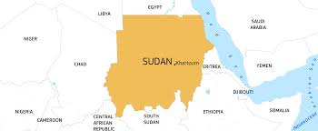

The Life of Ibrahim
My name is Ibrahim( Ee-bra_heem ), last name Abdulrahim Osman, age 20, background is Sudanese.
As a teenager, my life is all about experimenting new things and activities. for example, I am a native
Torontarian (yes, that's what we call ourselves down there).
I play soccer as a hobby to keep myself physically active after a long and stressful week of
classes and assignments.
Countries I Have Visited
Through my past 10 years, I've travelled to many countries. For many of reasons:
- Sudan:
- My parents were born and raised in Sudan, with their family members all living their,
so, it would make sense for me to visit their frequently.
For more information on Sudan and its beautiful culture, please Click here
Or, for information about Sudan and its political situation Click here

President of Sudan, Omar al-Bashir